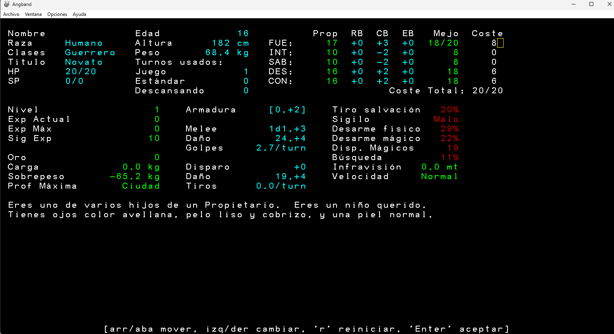

Angband es un complejo juego de simulación de mazmorras para un solo jugador. El jugador (es decir, ¡tú mismo!) crea un personaje, eligiendo entre una variedad de razas y clases, y luego juega con ese personaje durante días, semanas o incluso meses.
El jugador comenzará su aventura en el nivel del pueblo, donde podrá adquirir suministros, armas, armaduras y objetos mágicos comprando en las tiendas. Luego, podrá descender a las Fosas de Angband, donde explorará los numerosos niveles de la mazmorra, ganando experiencia al derrotar a feroces criaturas, recolectar objetos poderosos y valiosos tesoros, y regresar al pueblo ocasionalmente para comprar suministros. Con el tiempo, a medida que el jugador adquiera más experiencia, podrá intentar terminar o ganar el juego derrotando a Morgoth, el Señor de la Oscuridad, que reside en las profundidades.
Angband es un juego muy complejo, y puede resultar difícil comprenderlo todo al principio, sobre todo si nunca has jugado a un juego roguelike. Un recurso clave para los jugadores de Angband es el foro, donde puedes pedir ayuda y también publicar elogios, quejas, sugerencias, informes de errores y experiencias interesantes. ¡No seas tímido!
Angband es un juego muy complejo, así que quizás valga la pena leer la siguiente demostración rápida. Las siguientes instrucciones son solo para fines demostrativos, por lo que son intencionadamente aburridas.
Para esta demostración, asumiremos que nunca has jugado Angband, que no has solicitado ninguna "sub-ventana" especial, que no has solicitado ningún modo "gráfico" especial, que tienes un teclado numérico en tu computadora y que estás utilizando las opciones predeterminadas, incluyendo, en particular, el conjunto de comandos "original". Si alguna de estas suposiciones es incorrecta, ten en cuenta que esta demostración podría no funcionar; en particular, ten en cuenta que los usuarios de Windows usarán Tiles gráficos por defecto, por lo que, a menos que desactives los gráficos, los símbolos del mapa a continuación serán reemplazados por pequeñas imágenes. Hay muchas maneras de ver este archivo mientras juegas.
Cada vez que veas el mensaje -más-, léelo y pulsa la barra espaciadora. Esto tiene prioridad sobre cualquier otra instrucción. En cualquier otro caso, por ejemplo, si pulsas una tecla por accidente, normalmente puedes cancelar la acción en curso pulsando la tecla ESC.
Cuando el juego se inicie, dependiendo de la plataforma que uses, es posible que accedas directamente a la pantalla de creación de personajes o que tengas que crear uno nuevo a través del menú File (Archivo). En ambos casos, verás la pantalla de información del personaje y tendrás varias opciones. Para esta demo, pulsa a tres veces para elegir un personaje "guerrero humano" con el sistema de asignación de estadísticas basado en puntos. A continuación, verás una descripción de tu personaje. Léelo brevemente; contiene mucha información, y la mayor parte no tendrá sentido. Pulsa Enter cuatro veces y tu personaje aparecerá en la "ciudad".
Ahora deberías estar viendo la pantalla básica de interacción de la mazmorra. A la izquierda hay información sobre tu personaje. A la derecha hay una vista aérea del pueblo. No sucede nada en Angband mientras el juego espera que introduzcas un comando, así que observa bien el pueblo. Verás varios símbolos en la pantalla. Cada símbolo normalmente representa un elemento del terreno, un objeto o un monstruo. El @ es un símbolo especial, representa a tu personaje. Puedes usar el comando / para averiguar qué representa un símbolo determinado. Pulsa / y luego @ y podrás verificar el significado del símbolo @.
Los bloques sólidos (se ven como # y en algunos sistemas gráficos pueden ser símbolos) que rodean el pueblo representan las murallas que la rodean. No se puede salir del pueblo a la superficie, aunque algunos juegos derivados de Angband (llamados "variantes") incluyen un elemento en la superficie.
Los bloques rectangulares de paredes con un número en el borde representan tiendas. El número indica la entrada a la tienda. Los símbolos . representan el piso. Al inicio del juego será de día, por lo que la mayor parte de la ciudad debería consistir en tiendas y cuadrículas de piso iluminadas. También habrá algunos símbolos : que representan escombros. Los escombros se presentan en dos variedades: "escombros transitables" y "escombros simples", que se distinguen por su color. Ambos bloquean la visión, pero solo se pueden atravesar los escombros transitables.
Los símbolos alfabéticos siempre representan monstruos, y el término "monstruos" abarca una amplia variedad de entidades, incluyendo personas, animales, plantas, etc. Normalmente, solo aparecen unas pocas razas de monstruos en la ciudad, y la mayoría son inofensivas (evita a los mercenarios y veteranos si los ves). Los "monstruos" más comunes en la ciudad son animales pequeños (gatos y perros) y los propios habitantes (mercaderes, mercenarios, maleantes, vagabundos, etc.).
Ahora usa el comando l para "mirar" alrededor. Esto te permite mover el cursor y obtener una descripción de lo que hay en la posición del cursor. El cursor siempre comienza en la casilla donde se encuentra tu personaje. En este caso, verás un mensaje que indica que tu personaje está en una escalera. Al presionar la barra espaciadora, podrás recorrer los lugares de interés cercanos. Presiona q o ESC para salir del comando mirar.
Ahora pulsa i, para ver el "inventario" de tu personaje. Los personajes nuevos comienzan con algunos objetos que les ayudarán a sobrevivir (aunque hay una opción para empezar con más dinero). Tu personaje tendrá algo de comida, una poción, antorchas y un pergamino. Pulsa ESC para salir de la visualización del inventario. Pulsa e para ver lo que llevas puesto. Verás que llevas armadura, empuñas una daga e iluminas el camino con una antorcha. Tienes muchas otras ranuras de equipo, pero están todas vacías. Pulsa ESC para salir de la visualización del equipo.
Pulsa t para quitarte algo. Observa que la lista de equipo se reduce a los objetos que realmente se pueden quitar. Pulsa g para quitarte la armadura y vuelve a pulsar e. Observa que la armadura ya no aparece en la lista de equipo. Pulsa ESC. Pulsa w para empuñar algo y observa que la lista de inventario se reduce a los objetos que realmente se pueden empuñar o llevar puestos. Pulsa e para volver a ponerte la armadura.
Los monstruos solo pueden moverse después de que uses un comando que consume energía de tu personaje. Hasta ahora, has usado los comandos w y t, que consumen energía, y los comandos e, i, l, y /, que son comandos gratuitos y, por lo tanto, no consumen energía. En general, los únicos comandos que consumen energía son aquellos que requieren que tu personaje realice alguna acción en el mundo del juego, como moverse, atacar monstruos e interactuar con objetos.
Si había monstruos cerca de tu personaje mientras experimentabas con los comandos w o t, es posible que los veas moverse o incluso atacar. Aunque es poco probable, también es posible que tu personaje se haya muerto. Esta es la única forma de perder la partida. Así que, si ya has perdido, simplemente sal del juego y reinicia esta demo.
Una de las cosas más importantes que tu personaje puede hacer es moverse. Usa las teclas numéricas del teclado para mover a tu personaje. Las teclas 4, 6, 8, y 2 mueven a tu personaje hacia el oeste, este, norte y sur, y las teclas 7, 9, 1 y 3 lo mueven en diagonal. Cuando tu personaje se mueva por primera vez, observa el símbolo > que queda. Esta es la "escalera" sobre la que estaba parada antes en la demo; es la entrada a la mazmorra.
Intentando evitar a los monstruos, mueve a tu personaje hacia la entrada de la tienda, que se muestra 1 en la pantalla. Mientras tu personaje se mueve, usa el comando l para mirar a tu alrededor. Puedes pulsar ESC en cualquier momento para cancelar la exploración. Si mueres, vuelve a empezar.
Una de las cosas más difíciles de asimilar para quienes juegan por primera vez a este tipo de juegos es que el personaje no es el mismo que el jugador. El jugador pulsa teclas y mira la pantalla del ordenador, mientras que el personaje realiza acciones complejas e interactúa con un mundo virtual. El jugador decide qué debe hacer el personaje y se lo ordena, y el personaje ejecuta las acciones. Estas acciones pueden provocar cambios en el mundo virtual. Algunos de estos cambios pueden ser evidentes para el personaje, y la información sobre ellos se pone a disposición del jugador mediante diversos métodos, como mensajes, cambios en el estado del personaje o cambios visuales en la pantalla. Otros cambios solo serán evidentes para el jugador.
También existen muchas acciones que el jugador puede realizar y que no se pueden describir en el mundo virtual del personaje, como redimensionar ventanas, consultar la ayuda en línea, modificar mapas de color o cambiar opciones. Algunas de estas acciones pueden incluso afectar al personaje de forma abstracta; por ejemplo, el jugador puede solicitar que, a partir de ahora, todos los monstruos sepan con exactitud dónde se encuentra el personaje en todo momento. Asimismo, hay acciones que el personaje realiza habitualmente y que el jugador quizás ni siquiera considere, como digerir alimentos o buscar trampas mientras camina por un pasillo.
Para colmo, a medida que te acostumbras a la diferencia entre el jugador y el personaje, se vuelve tan "obvia" que empiezas a ignorarla. Llegado ese punto, te das cuenta de que estás fusionando al jugador y al personaje en tu mente, y te encuentras diciendo cosas como "Ayer estuve en casa de un amigo, me quedé despierto hasta tarde jugando Angband, me atacaron unos perros salvajes, me mató un demonio, pero logré entrar en la lista de puntuaciones más altas", donde el pronombre cambia varias veces entre el mundo real y el virtual en la misma frase. Así que, a partir de este momento, quizás tengas que separar al jugador del personaje.
Bueno, sigue caminando hacia la entrada de la tienda general hasta que entres. En ese momento, la pantalla debería cambiar a la pantalla de interacción de la tienda. Verás el nombre del tendero, el nombre de la tienda y una lista de los objetos disponibles. Si hay más de doce objetos diferentes, puedes usar la barra espaciadora o las teclas de flecha para desplazarte por la lista. La tienda general es la única con un inventario fijo, aunque la cantidad de artículos puede variar. Uno de los artículos que se venden aquí son frascos de aceite. Presiona la flecha hacia abajo para resaltar la línea con los frascos de aceite y presiona la tecla p para comprar algunos. Si te preguntan cuántos quieres, simplemente presiona Enter. Si ya hay algo bajo el cursor, presiona Retorno para aceptar esa opción. Presiona Enter para aceptar el precio. Muchos comandos funcionan dentro de la tienda; por ejemplo, usa el comando i para ver tu inventario, con el nuevo frasco de aceite. Ten en cuenta que tu inventario siempre se mantiene ordenado de forma semi lógica, por lo que los índices de algunos objetos pueden cambiar a medida que cambia tu inventario.
Compra algunos frascos de aceite más, si es posible: esta vez, cuando te pregunte cuántos quieres, presiona 3 luego Enter para comprar tres frascos a la vez. Los frascos de aceite son muy importantes para los personajes de bajo nivel, porque no solo se pueden usar para alimentar una linterna (cuando encuentres una), sino que también se pueden encender y lanzar a los monstruos desde la distancia. Así que suele ser una buena idea tener algunos frascos de aceite extra. Presiona ESC para salir de la tienda. Si quieres, tómate tu tiempo para visitar el resto de las tiendas. Uno de los edificios, marcado con un 8, es tu "casa", y no es una tienda real. Puedes dejar cosas en casa y se quedarán allí hasta que regreses a recogerlas. La interfaz es exactamente la misma que la de una tienda, pero no hay pago.
Ahora dirígete a la escalera, representada por el símbolo >, y pulsa >, para bajar. En este punto, estás en la mazmorra. Usa el comando l para mirar alrededor. Observa que estás en una escalera que lleva de vuelta al pueblo. Usa el comando < para subir las escaleras de vuelta al pueblo. Puede que encuentres que los habitantes del pueblo que estaban aquí antes han desaparecido y han aparecido otros nuevos. Ahora usa el comando > para bajar de nuevo las escaleras hacia la mazmorra. Ahora estás en una parte diferente de la mazmorra a la que estabas antes. La mazmorra es tan grande que, una vez que salgas de una parte, nunca la volverás a encontrar.
Ahora mira la pantalla. Tu personaje probablemente estará al final de un pasillo rodeado por ocho paredes y con un piso en la otra dirección. Si no estás al final de un pasillo, sigue subiendo al pueblo y bajando a la mazmorra hasta que lo estés. Podrías moverte por los pisos del pasillo, un cuadrado a la vez, pero el juego proporciona una forma, llamada "correr", de moverte muchos cuadrados hasta que haya una decisión que tomar sobre adónde ir o aparezca o suceda algo interesante. Inténtalo ahora: presiona . y luego la tecla de dirección que te movería al piso vacío (en la mayoría de los sistemas, puedes presionar y mantener presionada la tecla Shift antes de presionar la tecla de dirección como atajo para la secuencia de dos teclas . seguida de una dirección).
Cuando tu personaje se detenga, usa l para mirar alrededor y ver qué lo detuvo. Podría ser una puerta cerrada, +, que puedes abrir moviéndote hacia ella. Podrían ser escombros, :, que bloquean el camino. Puedes despejarlos cavando un túnel: T seguido de una tecla de dirección para indicar qué casilla excavar (en muchos sistemas, mantener presionada la tecla Control seguida de la tecla de dirección también funciona; esto invoca el comando "alterar" que se puede usar para excavar, abrir puertas y otras cosas).
Podría tratarse de un objeto, representado por un símbolo de puntuación, que no se parece a una pared, un suelo, una puerta cerrada, una puerta abierta o rota, '. En ese caso, al moverte hacia el objeto y presionar g y lo recogerás. Si el objeto en el suelo coincide con algo de tu inventario o es de oro o gemas, $, tu personaje lo recogerá automáticamente.
Un monstruo podría haber detenido la carrera. La mayoría de los monstruos están representados por letras, pero algunos se parecen lo suficiente a objetos como para estar representados por un símbolo de puntuación. En caso de duda, usa l para mirar algo y saber qué hay allí. Si un monstruo detuvo la carrera, puedes atacarlo moviéndote junto a él y luego moviéndote hacia él. Sigue moviéndote hacia el monstruo hasta que lo mates, el monstruo huya o tu personaje muera. Si tu personaje muere, comienza una nueva partida. Si el monstruo muere, puede que haya soltado uno o más objetos. Puedes recogerlos moviéndote hacia el objeto y luego presionando g.
La carrera podría haberse detenido cuando un pasillo se bifurcaba en dos o más, o al entrar en una habitación, un espacio vacío con paredes interiores. A esta profundidad, las habitaciones casi siempre están iluminadas, y podrás ver partes más allá del radio cuadrado iluminado por tu linterna. Los pasillos son oscuros y, a menos que haya una habitación iluminada al final, solo verás lo que ilumina tu fuente de luz.
Ahora usa las teclas de movimiento para explorar la mazmorra. Mientras tu personaje se mueve, notarás que la pantalla muestra algunas de las cuadrículas que ha visto. Piensa en esto como una especie de "mapa" superpuesto al mundo mismo; el jugador puede ver el mapa completo, pero el personaje solo puede ver las partes del mundo que están realmente cerca. Si el personaje se acerca al borde de la parte del "mapa" de la pantalla, el mapa completo se desplazará para mostrar una nueva parte del mundo. Si la ventana del juego puede mostrar 80 por 24 caracteres, el jugador solo puede ver aproximadamente el diez por ciento de un nivel típico de mazmorra a la vez. Sin moverte, puedes usar el comando L para mirar otras partes del mapa (también es posible con el comando de mirar l; consulta la sección de selección de objetivos del manual para obtener más detalles). Usa la tecla R y luego Enter para forzar a tu personaje a "descansar" hasta que se haya recuperado de cualquier daño que sufra al atacar monstruos. Usa la tecla M para ver todo el nivel de la mazmorra a la vez y presiona ESC cuando termines. Si tus raciones de comida aún están en el índice a de tu inventario, presiona E, a para comer algo. Si tu aceite aún está en el índice b de tu inventario y hay un monstruo cerca, presiona v, b, ' para lanzar un frasco de aceite al monstruo más cercano. Para soltar un objeto de tu inventario, presiona d más el índice de ese objeto. Puedes usar la tecla ^X para salir y guardar la partida.
Ahora ya sabes lo suficiente para jugar una partida rápida de Angband. Aún te queda mucho por aprender, incluyendo cómo interpretar la información sobre tu personaje, cómo crear diferentes tipos de personajes, cómo determinar qué equipo usar, cómo utilizar diversos objetos y cómo usar los más de cincuenta comandos disponibles para tu personaje. El mejor recurso para aprender todo esto es el manual que incluye esta demo. La ayuda del juego, a la que accedes pulsando ?, incluye una lista de los comandos con la tecla y una breve descripción de cada uno.
Esta guía asume que ya conoces la mecánica básica del juego. Si eres completamente nuevo en Angband, revisa el manual de usuario y simplemente empieza a jugar: entra en la mazmorra e intenta, bueno, lo que te parezca prudente. Probablemente morirás bastante rápido, pero lo que sigue tendrá mucho más sentido si ya tienes algo de experiencia en el juego.
Esta guía fue escrita para Angband 3.5.0 y actualmente está un poco desactualizada (aunque se ha eliminado lo más obsoleto). Sigue siendo una fuente útil de consejos y sugerencias; solo no la tomes como algo definitivo.
Tomado de una publicación clásica de rgra, en realidad no hay mucho que tengas que hacer obligatoriamente. Tu única misión es matar a Morgoth en el nivel 100 de la mazmorra. Para llegar allí, necesitas bajar muchas escaleras y matar a Sauron en el nivel 99. Eso es básicamente todo; todo lo demás es opcional. Por supuesto, antes de poder matar a Sauron necesitarás mucha experiencia y buen equipo, pero para cuando llegues a esa profundidad ya tendrás ambas cosas. Solo asegúrate de no morir en el camino.
Lo más importante que debes tener claro es que no puedes matar a todos los monstruos de todos los niveles. Piensa en el juego como incursiones a la mazmorra de las que quieres regresar con cosas geniales; piensa en los niveles más superficiales como obstáculos que debes superar en tu camino hacia las profundidades; o como prefieras verlo. Simplemente nunca, jamás, lo pienses como una matanza indiscriminada. Hasta que encuentres a Sauron, tu tarea es sobrevivir y eventualmente llegar al nivel 99.
El siguiente punto es que no necesitas enfrentar a ningún monstruo en particular (aparte de los dos grandes). Sí, puede que haya un tesoro bastante impresionante en ese vault o bóveda, pero si los monstruos que la custodian son demasiados o demasiado feroces, simplemente déjala pasar. Angband ofrece un suministro interminable de monstruos, tesoros y de todo. Siempre habrá otro día, siempre que vivas para verlo. A veces simplemente tienes que huir y correr por tu vida.
Entonces, para resumir, los puntos vitales de Angband son:
A partir de aquí, la guía asume que estás jugando con una clase de combate (guerrero, explorador, pícaro o paladín) y una raza (Dúnedain, Alto Elfo, Enano, Semiorco, Semitroll). Primero, usa la selección de estadísticas "basada en puntos".
Primero, ajusta tus estadísticas para obtener el máximo de golpes. Si tienes una combinación con buena destreza, selecciona 18/10 de destreza y luego ajusta tu fuerza a 17 o 18. Ajusta tu estadística de lanzamiento de hechizos a algo bajo pero utilizable (~12), y gasta el resto en constitución. Para un personaje principiante, la constitución es lo menos importante, porque no añade HP significativos hasta bastante por encima de 18.
Ejemplo de un personaje en versión de Windows 11:
